The Magick Manuscript
A vast, living digital grimoire: fifteen interconnected archives of witchcraft knowledge, built to be searched, studied, and returned to.
What Is the Magick Manuscript?
The Magick Manuscript is not a book. It is a database, a structured, searchable, interconnected digital grimoire built inside Notion and designed to function as the most organized witchcraft reference you will ever use.
It contains over 10,000 entries across fifteen distinct grimoires, each covering a domain of magickal knowledge in depth. Every entry is tagged, categorized, and linked to related entries across other grimoires.
Whether you need to know which crystals align with the planet Mercury, which herbs correspond to love workings, or how a specific rune connects to the tarot, the manuscript surfaces that knowledge in seconds.
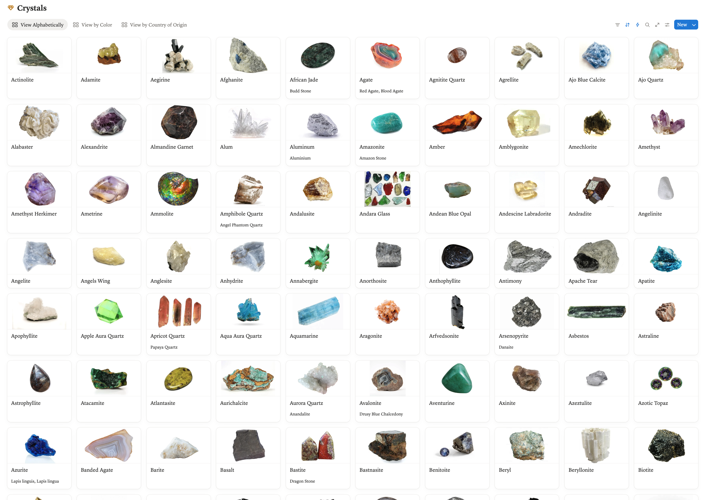
How the Manuscript Works
A database structure built for depth, discovery, and cross-reference, the way a true practitioner thinks about knowledge.
Open a Grimoire
Choose from fifteen curated archives, from Crystals to Cards to Rituals. Each grimoire is its own organized database.
Search or Filter
Use Notion's powerful search and filter tools to find entries by name, element, planet, intention, or any other property.
Explore Connections
Each entry links to related entries across other grimoires. A crystal connects to its herbs, oils, rituals, and planetary ruler.
Build Your Practice
Use the manuscript as a reference for building spells, rituals, and personal workings grounded in structured magickal knowledge.
Built in Notion for maximum flexibility, accessible from any device and always expanding to reflect the depth of the craft.
See It For Yourself
A look inside the grimoires, from searchable overview to individual entry detail.
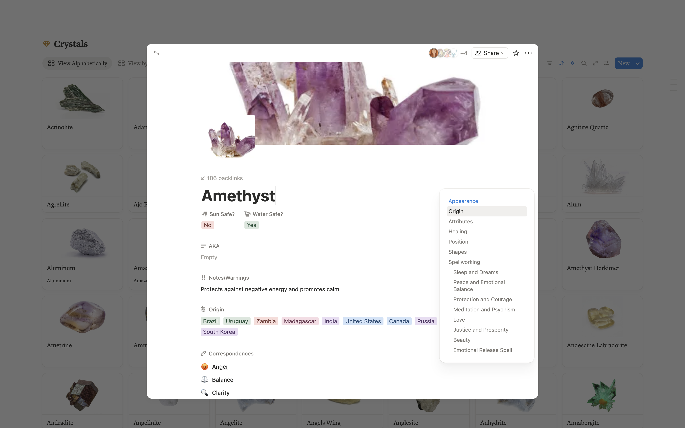
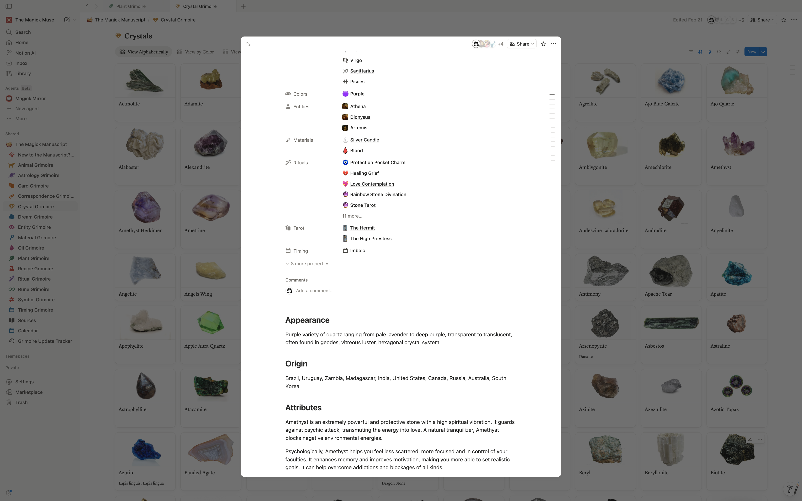
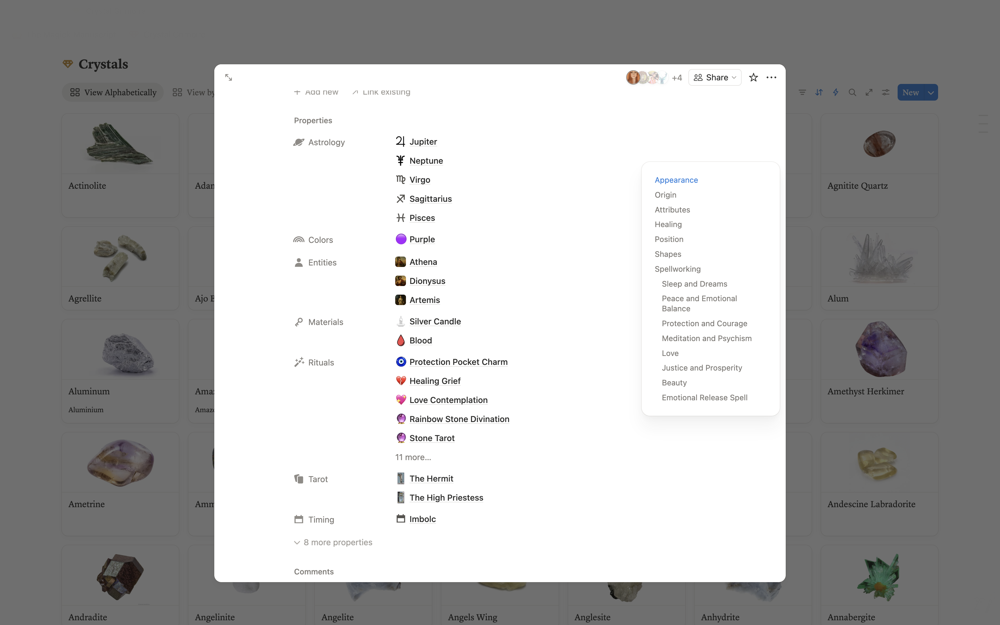
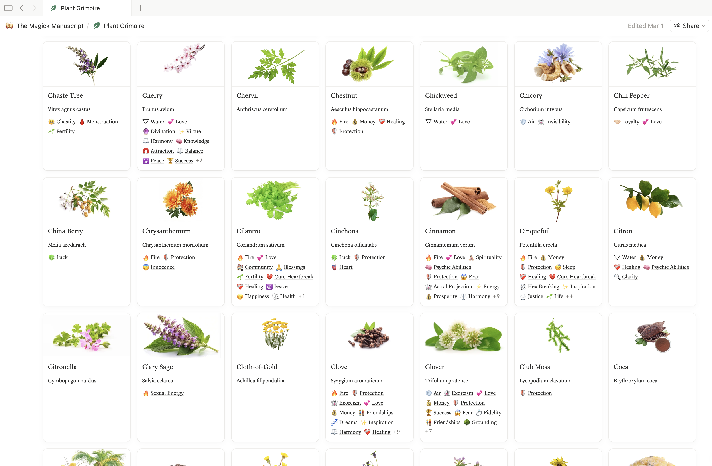
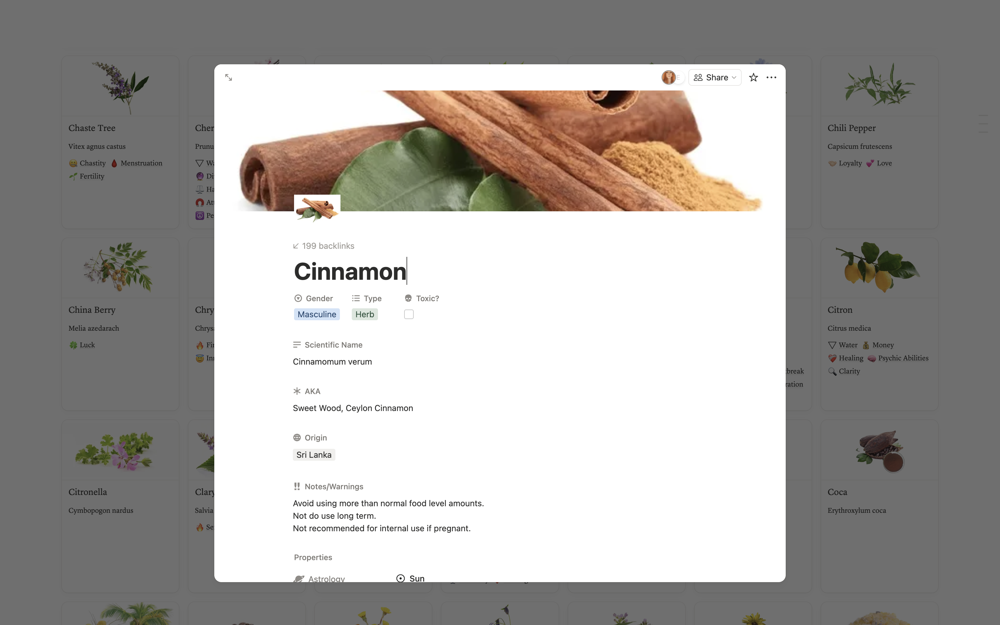
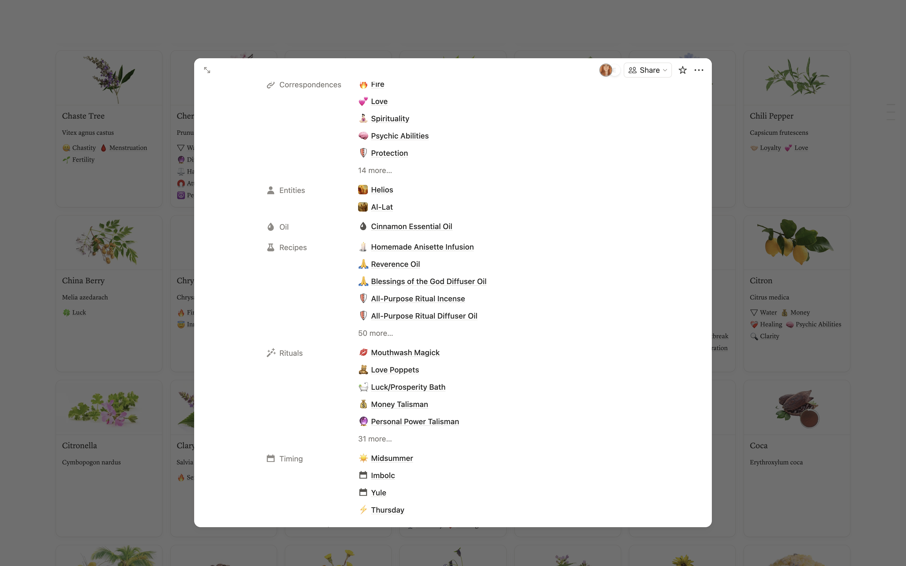
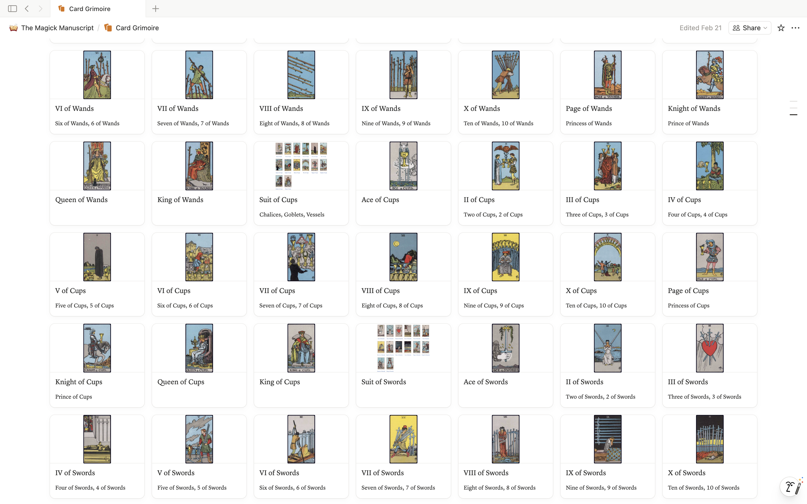
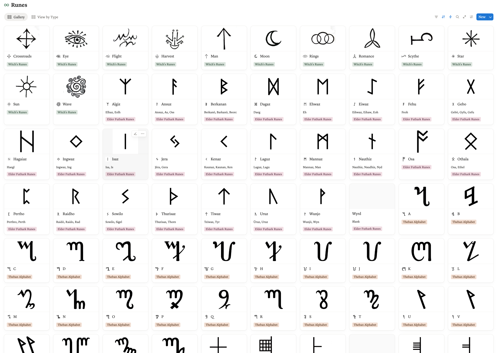
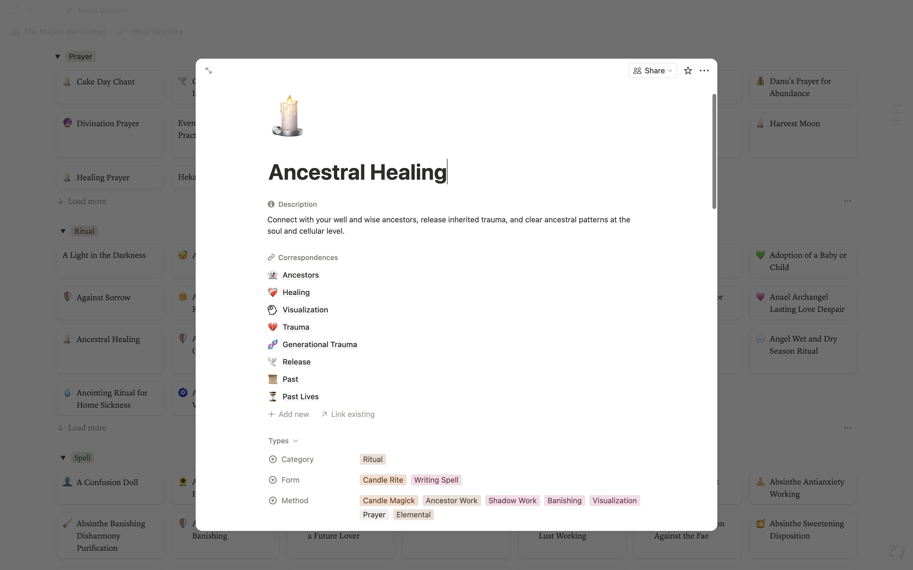
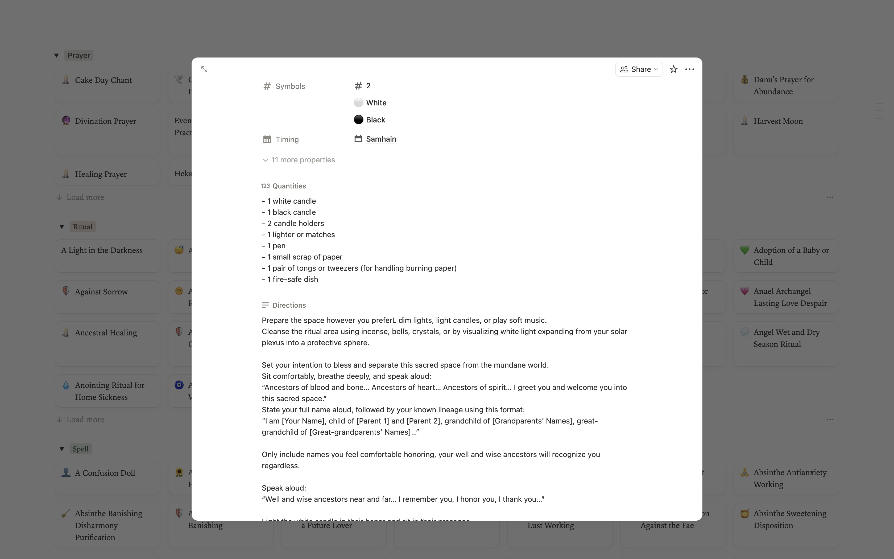
Fifteen Grimoires
Each grimoire is a dedicated, searchable database covering one domain of magickal knowledge in depth and detail.
Features That Make the Manuscript Exceptional
Fully Searchable
Find any entry instantly by name, keyword, property, or intention. No more flipping through pages.
Structured Correspondences
Every entry includes structured properties, elements, planets, intentions, and more, consistently applied.
Cross-Linked Topics
Follow threads between grimoires. See how a crystal relates to its herbs, rituals, and astrological timing.
Ongoing Updates
New entries and expanded content are added regularly. Lifetime access means you always have the latest version.
Any Device, Anywhere
Built in Notion, accessible on desktop, tablet, and mobile. Your grimoire travels with you.
The Scope of the Manuscript
Access the Magick Manuscript
Choose the access option that fits your practice. From a free preview to full lifetime access, the manuscript is waiting for you.